Gottfried Wilhelm (von) Leibniz: German (1646–1716)
On February 15, 1946, the front page of the New York Times featured the announcement of “an amazing machine which applies electronic speeds for the first time to mathematical tasks hitherto too difficult and cumbersome for solution,” which was one of the earliest electronic general-purpose computers. The ENIAC (Electronic Numerical Integrator and Computer) was built during wartime at the University of Pennsylvania, and it is now considered a milestone in the history of computers. It was of monstrous size, as it weighed more than 25 tons and occupied an area of more than 150 square meters (see fig. 18.1).
Among other basic electronic components, such as relays, resistors, or capacitors, it contained 20,000 vacuum tubes,1 connected through miles of wiring and approximately 5,000,000 hand-soldered joints.2 The “mother of all electronic computers” consumed 150,000 watts of electricity; in comparison, a modern desktop computer needs only about 200 watts. The immense power requirement led to the rumor that whenever ENIAC was switched on, lights in Philadelphia dimmed.
ENIAC was just a large collection of electronic adding machines and other arithmetic units; it lacked stored programs or an operating system that are found in modern computers. Digits were stored using ten-position ring counters, for the ten digits of our decimal system, and each digit required thirty-six vacuum tubes. Programming the machine to solve a particular problem was done by manipulating its switches and cables, and it could take several weeks to find a problem’s solution. Furthermore, vacuum tubes had a limited lifetime, and if a program didn’t work properly, programmers would have to crawl inside the massive structure to find bad tubes or detect bad joints. The first programmers of ENIAC were all female: Kay McNulty, Betty Jennings, Betty Snyder, Marlyn Meltzer, Fran Bilas, and Ruth Lichterman. Their work was not widely recognized, for over fifty years. In fact, historians had at first mistaken them for models posing in front of the machine.
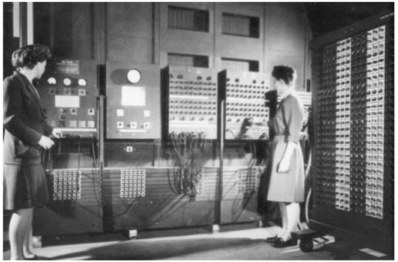
Figure 18.1. Betty Jennings (left) and Fran Bilas (right), operating ENIAC’s main control panel. (US Army photo, ARL Technical Library, 1945–1947.)
The enormous size and power consumption of ENIAC and similar machines developed at about the same time were mainly caused by the vacuum tubes, which were used as switches and amplifiers; thus, they represented essential elements of any electronic device. Similar to today’s incandescent light bulbs, vacuum tubes were bulky, produced a lot of heat, and frequently failed. The solution to this issue came in 1947, when William Shockley, John Bardeen, and Walter Brattain of Bell Laboratories discovered the transistor effect in semiconductors, allowing them to build an electric switch made of solid materials—a transistor—obviating the need for a vacuum tube. They were awarded the Nobel Prize in Physics in 1956 for their invention of the transistor, which is still considered one of the greatest breakthroughs in technology history. Transistors were much smaller and faster, and they were more reliable and more powerful than vacuum tubes. Through the late 1950s and 1960s, the so-called first-generation computers, made with bulky vacuum tubes, were replaced by second-generation computers using transistors instead. The invention of the transistor laid the foundation for the digital revolution that began in the second half of the twentieth century and continues to the present day.
Transistors are the basic building blocks of microprocessors. The central processing unit (CPU) of your computer contains billons of transistors, all packed into an area of about a square inch. A transistor is essentially an electronic switch, which can be in either an “on” or an “off” state. These two possible states or positions define what is called Boolean algebra: an algebra in which the values of the variables are the truth-values: “true” and “false,” usually denoted 1 and 0. Indeed, the language of computers consists of only two symbols: zeros and ones. The basic unit of information is a binary digit or “bit” (which can be either 0 or 1). A sequence of 8 bits is called a byte; a kilobyte consists of 1,000 bytes; a megabyte of 1,000 kilobytes, and so on. Interpreting a sequence of bits as a place-value notation with consecutive powers of 2, we obtain a binary number: For example, the binary number 10001001 represents the decimal number 27 + 23 + 20 = 137; likewise, the binary number 11111111 represents the decimal number 27 + 26 + 25 + 24 + 23 + 22 + 21 + 20 = 255. Thus, with one byte of information, we can encode 256 different characters (since we can represent all numbers from 0 to 255). Modern computer architectures typically use “words” of 32 or 64 bits, built from 4 or 8 bytes. It is quite remarkable that binary numbers have already been thoroughly studied by the German philosopher and mathematician Gottfried Wilhelm Leibniz, long before 1800, when Alessandro Volta invented the first battery and built electrical circuits. Leibniz invented binary arithmetic, which is in fact used by virtually all modern computers. However, he not only laid the theoretical foundations for electronic computers but also anticipated them by describing machines that were, at least in principle, capable of solving complex mathematical problems. Moreover, he is credited, along with Isaac Newton, with the development of differential and integral calculus. And it should be said that today we use Leibniz’s symbolism in calculus rather than Newton’s symbolism, as was mentioned in the previous chapter. While giving a short overview of his life, we will illuminate a few of his contributions to mathematics.
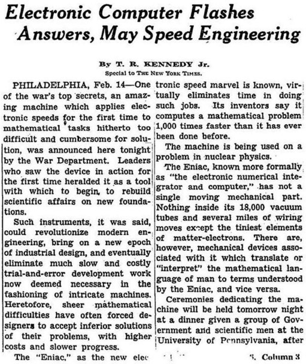
Figure 18.2.
Gottfried Wilhelm Leibniz was born on the July 1, 1646, to Friedrich Leibniz, a professor of moral philosophy at Leipzig, and Catharina Schmuck, Friedrich’s third wife. Friedrich Leibniz died when Gottfried was six years old. At the age of seven, Leibniz entered the Nicolai School in Leipzig and from that time on, he was also given free access to his father’s personal library, which he would later inherit. His father’s library seems to have been more influential on his education than the curriculum he was taught at school. Strongly motivated by wanting to read his father’s books, Leibniz taught himself Latin by comparing Latin and German descriptions in illustrated books. So as to decipher the meaning of the Latin words, he compared the descriptions of the same pictures in two different books. By the age of twelve, he was proficient in the Latin language, mastering it far beyond school level. Through his father’s library, he had access to advanced texts of philosophy and theology. His skill at Latin enabled him to read these books. In 1661, at the age of fourteen, he enrolled in his father’s former university and completed his bachelor’s degree in philosophy in December 1662. He then spent the summer term of 1663 in Jena, Germany, where Erhard Weigel was professor of mathematics. Weigel was also a philosopher who believed that numbers were the fundamental concept of the universe. Back in Leipzig, Leibniz applied the mathematical ideas he had learned from Weigel to his studies in philosophy and law. In particular, he assigned values of 0, 1, and
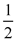
to conditions of law that were impossible, necessary (absolute), or conditional, respectively. Leibniz was awarded his bachelor’s degree in law in 1665, the year after his mother had died. He then started to work on his habilitation thesis in philosophy, which was then included as part of his first book, Dissertatio de arte combinatoria (On the Combinatorial Art). In 1666, the University of Leipzig rejected Leibniz’s doctoral application, probably because of his relative youth, as compared to the other candidates, and the limited number of available tutorials. Yet Leibniz did not want to wait another year, so he went to the University of Altdorf, where he received a doctorate in law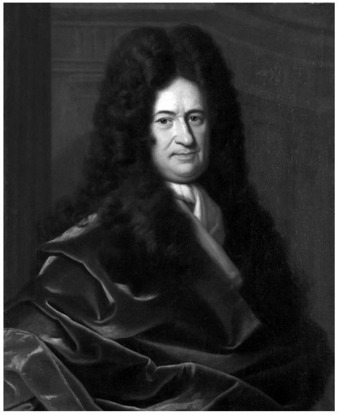
Figure 18.3. Gottfried Wilhelm Leibniz.
in 1667 for his dissertation De casibus perplexis (On Perplexing Cases). He was immediately offered an academic appointment at the University of Altdorf but declined it for a position as a secretary to an alchemical society in Nuremberg, Germany. He then met Baron Johann Christian von Boyneburg, who hired him as his assistant, librarian, lawyer, and advisor. While working on various projects for Von Boyneburg, Leibniz published political essays and continued his law career, promoted by the baron, who used his personal contacts to enhance Leibniz’s career. In 1672, Leibniz went to Paris on a diplomatic mission related to his role as an advisor to German authorities. In Paris, he met the Dutch physicist and mathematician Christiaan Huygens (1629–1695), who introduced Leibniz to the works of the great mathematicians of the time and mentored Leibniz in his self-study of the newest developments in mathematics. In a letter to his friend the Swiss mathematician Johann Bernoulli (1667–1748) in 1703, Leibniz wrote, “When I arrived in Paris in the year 1672, I was self-taught with regard to geometry, and indeed had little knowledge of the subject, for which I had not the patience to read through the long series of proofs.”3 Leibniz first demonstrated mathematical talent when Huygens sent him a problem for which he himself had already found the solution. The problem was to find the sum of the infinite series of reciprocal triangular numbers, which are the numbers representing objects that can be arranged in an equilateral triangle, as is shown in figure 18.4.
Let us first look at a finite series of, say, six numbers, and consider their sum, a1 + a2 + a3 + a4 + a5 + a6. Leibniz noticed that if we take any given finite series of numbers and form the series of differences of successive terms, such as:
d1 = a2 – a1, d2 = a3 – a2, d3 = a4 – a3, d4 = a5 – a4, d5 = a6 – a5,
then the sum of these differences is simply the difference between the last and first terms of the original series:
d1 + d2 + d3 + d4 + d5 = a6 – a1.
Thus, if we can express a given series b1, b2, b3, . . . as a series of differences of successive terms of another series, a1, a2, a3, . . ., then we can compute the sum of the original series, b1 + b2 + . . . + bn, by simply subtracting the first from the last term of the other series: b1 + b2 + . . . + bn = an + 1 – a1. To compute the sum of the reciprocals of the triangular numbers, Leibniz wrote this sum as a sum of differences, which turns out to be twice the sum of differences of the reciprocals of the natural numbers:
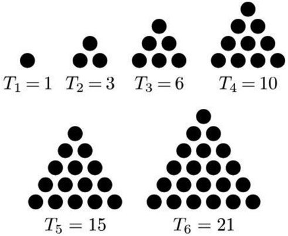
Figure 18.4.
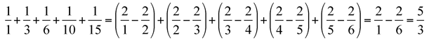
Leibniz described this procedure as follows: “If one wants to add, for example, the first five fractions (reciprocals of triangular numbers) from
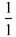
to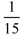
inclusive, one takes the number of fractions, that is, 5, added to 1 to get 6, and creates the fraction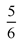
, which when doubled is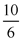
, or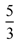
, which gives us the sum: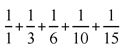
which is, the same as if one had added these fractions together.”4 If we denote the triangular numbers by T1, T2, T3, . . ., we have thus obtained a simple formula for the sum of their reciprocals:
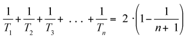
This procedure can be extended to the infinite series of triangular numbers by letting n go to infinity in the expression
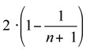
This term will approach 2 as n gets larger and larger, and, thus, the sum of the infinite series
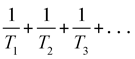
is equal to 2. By applying his method to other infinite series, Leibniz was able to calculate their limits as well. He also anticipated the modern mathematical definition of the sum of an infinite series as a limit, when he wrote in an unpublished paper of April 1676: “Whenever it is said that a certain infinite series of numbers has a sum, I am of the opinion that all that is being said is that any finite series with the same rule has a sum, and that the error always diminishes as the series increases, so that it becomes as small as we would like.”5
Leibniz was soon acquainted with the mathematical achievements of his generation and began to pursue his own ideas, which would lead to significant contributions in mathematics. He spent the next four years in Paris, interrupted only by a trip to London, where he visited the Royal Society and presented a not-yet-complete calculating machine that he had designed and that would be the first one capable of executing all four basic operations (adding, subtracting, multiplying, and dividing). The members of the Royal Society were very impressed and quickly elected him as an external fellow. During his stay in Paris, he developed his variant of infinitesimal calculus using differentials, as well as most of his other substantial works in mathematics. In a manuscript dated November 21, 1675, he used his notation for the integral of a function, ʃ f(x) dx, for the first time. In a letter to Newton, he employed his method of differentials, which Newton recognized as being equivalent to his own method of fluxions. Newton had described some of his results in an earlier letter to Leibniz (yet without describing his methods) and believed that Leibniz had stolen his ideas. In fact, Newton employed his equivalent formulation of calculus using fluxions as early as 1666 but did not publish it until 1693. Newton rightfully claimed that not a single previously unsolved problem was solved by Leibniz’s approach to calculus. While this is true, as we mentioned earlier, Leibniz must still be credited for developing a modern mathematical notation that is now standard in calculus, whereas Newton’s impractical notation was eventually abandoned. During his time in Paris, Leibniz absorbed all contemporary mathematics and reformulated it in an improved system of notation, thereby simplifying calculations and making the tools of calculus much more easily accessible for other mathematicians and physicists. Although he did not obtain any new mathematical results with his variant of calculus, his superior system of notation proved to be highly influential for further developments in mathematics. Leibniz would have liked to have remained in Paris and tried to become an honorary member of the French Academy of Sciences, but no invitation came. His patron, von Boyneburg, had died; without a professional perspective in Paris, in October 1676, he therefore accepted a position as a librarian and court councilor at the House of Hanover. The House of Hanover is a German royal dynasty, formally named the House of Brunswick-Lüneburg, Hanover line. It provided monarchs to Great Britain and Ireland and ruled the United Kingdom of Great Britain throughout the nineteenth century. Around 1679, Leibniz developed binary arithmetic, which was published in his 1703 article “Explication de l’arithmétique binaire” (Explanation of Binary Arithmetic). In the introduction, he writes:
The ordinary reckoning of arithmetic is done according to the progression of tens. Ten characters are used, which are 0, 1, 2, 3, 4, 5, 6, 7, 8, 9, which signify zero, one, and the successive numbers up to nine, inclusively. And then, when reaching ten, one starts again, writing ten as “10,” ten times ten, or one hundred, as “100,” ten times one hundred, or one thousand, as “1000,” ten times one thousand by “10000,” and so on. But instead of the progression of tens, I have for many years used the simplest progression of all, which proceeds by twos, having found that it is useful for the perfection of the science of numbers. Thus, I use no other characters in it except 0 and 1, and when reaching two, I start again. This is why two is here expressed by “10,” and two times two, or four, by “100,” two times four, or eight, by “1000,” two times eight, or sixteen, by “10000,” and so on.6
As we have done earlier, to convert a binary number into a decimal number, we just have to add the represented powers of 2. For example, the binary number 101011 represents (read from right to left) 1·20 + 1·21 + 0·22 + 1·23 + 0·24 + 1·25 =43. To convert a decimal number into its binary representation, we divide by 2, and write down the remainder R (which must be 0 or 1), and repeat this procedure until we reach 0:
43 ÷ 2 = 21 R: 1
21 ÷ 2 = 10 R: 1
10 ÷ 2 = 5 R: 0
5 ÷ 2 = 2 R: 1
2 ÷ 2 = 1 R: 0
1 ÷ 2 = 0 R: 1
The sequence of remainders, reading from bottom to top, gives us the binary representation of 43 as 101011. Why does this work?
Dividing the expression 1·20 + 1·21 + 0·22 + 1·23 + 0·24 + 1·25 =43 by 2 reduces by 1 the exponents of all powers of 2, yielding 1·20 + 0·21 + 1·22 + 0·23 + 1·24 with a remainder of 1. Again, dividing by 2, we arrive at 0·20 + 1·21 + 0·22 + 1·23 with a remainder of 1; and, continuing this process, we obtain all digits of the binary representation of 43, the last one being the one with the highest place value, and, therefore, the final remainder after successive divisions by 2.
After providing conversion tables for the numbers from 0 to 32, Leibniz explains addition, subtraction, multiplication, and division for binary numbers. These operations are actually much like the normal decimal operations with which we are familiar, except that they carry a value of 2 instead of a value of 10. For example, adding the decimal numbers 5 and 8 gives a last digit of 3, and we carry 1 to the next digit to obtain 13. In the same fashion, adding the binary numbers 1 and 1, we get 0 as the last digit and carry 1 to the next digit, giving the binary number 102 (here we place the subscript 2 to distinguish binary numbers from decimal numbers). To add the binary numbers 1102 and 1112, we start from the last digit: Adding 0 and 1, we get 1 (with no carry). Thus, the last digit of the answer will be 1. We then move one digit to the left: Adding 1 and 1 gives us 0 and a carry of 1. The next digit of the answer will be 0, and we have to a carry a 1. Moving on to the next digit, we add 1 and 1 and the carry from the last digit, which gives us 1 and a carry of 1. Hence, we get the answer 11012. Figure 18.5 shows additional examples from Leibniz’s original work “Explication de l’arithmétique binaire” (he wrote in French because the article was published by the French Academy of Sciences). You may want to try binary subtraction, multiplication, and division as well.
Is his article, Leibniz then argues that binary arithmetic is actually simpler than decimal arithmetic, since one doesn’t have to memorize any addition or multiplication tables; it suffices to know how to add and multiply zeros and ones. As he goes on, he writes:
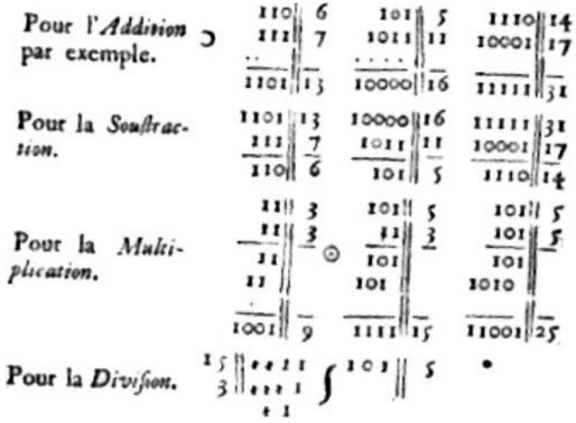
Figure 18.5. “Explication de l’arithmétique binaire.” (Academie royale des sciences, 1703.)
However, I am not in any way recommending this way of counting as an effort to introduce it in place of the ordinary practice of counting by ten. For, aside from the fact that we are accustomed to this, we have no need to learn what we have already learned by heart. The practice of counting by ten is shorter and the numbers not as long. And if we were accustomed to proceed by twelves or sixteens, there would be even more of an advantage. But calculating by twos, that is, by 0 and 1, as compensation for its length, is the most fundamental way of calculating for science, and provides for new discoveries, which are then found to be useful, even for the practice of numbers and especially for geometry. The reason for this is that, as numbers are reduced to the simplest form, such as 0 and 1, a wonderful order is apparent throughout.7
In fact, Leibniz already imagined a machine in which binary numbers were represented by marbles, governed by a rudimentary sort of punched cards, thereby anticipating the principle of modern electronic digital computers.
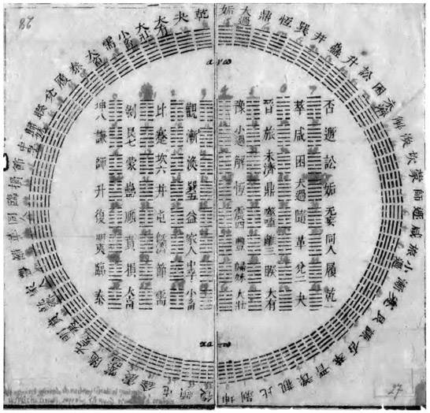
Figure 18.6. Diagram of hexagrams sent by Joachim Bouvet (1656–1730), a French Jesuit who traveled extensively in China, to Leibniz, 1701. (Franklin Perkins, Leibniz and China: A Commerce of Light (Cambridge: Cambridge University Press, 2004.)
Leibniz spent the rest of his life in Hanover, except for some extensive travels through Europe. Besides his duties at the court, he kept writing about mathematics, logic, physics, and philosophy, and he held correspondence with many of the great scholars of his time. He wrote in several languages, primarily in Latin, French, and German. Moreover, Leibniz was perhaps the first major European intellectual with a close interest in Chinese civilization, and he noted with fascination that the hexagrams in the I Ching, an ancient Chinese divination text, correspond to the binary numbers from 000000 to 111111. Figure 18.6 shows a diagram of the I Ching hexagrams, with Arabic numerals added by Leibniz.
Apart from his contributions to mathematics, he is also remembered as a major figure in philosophy and logic, and as the inventor of the step calculator and a digital mechanical calculator that he developed in 1694 (see fig. 18.7). Together with René Descartes and Baruch Spinoza, Leibniz was one of the three great rationalists of the seventeenth century, forerunners of the Age of Enlightenment. He was one of the last polymaths and left an incredible number of writings and letters on diverse subjects, some 200,000 pages of written and printed paper have survived. That his broad interests and richness of ideas might sometimes have been a burden is revealed in a letter he wrote to a friend, indicating his slight desperation about the limited amount of time available for his intellectual pursuits:
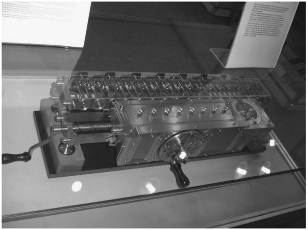
Figure 18.7.
I cannot tell you how extraordinarily distracted and spread out I am. I am trying to find various things in the archives; I look at old papers and hunt up unpublished documents. From these I hope to shed some light on the history of the [House of] Brunswick. I receive and answer a huge number of letters. At the same time, I have so many mathematical results, philosophical thoughts, and other literary innovations that should not be allowed to vanish, and that I often do not know where to begin.8
The last years of Leibniz’s life were embittered by a long controversy with Newton, and others, over whether Leibniz had discovered calculus independently of Newton, or whether he had merely invented another notation for ideas that were fundamentally Newton’s. He received little appreciation for his mathematical works during his lifetime and died lonely (as he never married) in Hanover in 1716. Although Leibniz was a life member of the Royal Society and the Berlin Academy of Sciences, neither organization saw fit to honor his death. In 1985, the German government created the Leibniz Prize, one of the world’s largest prizes for scientific achievement.